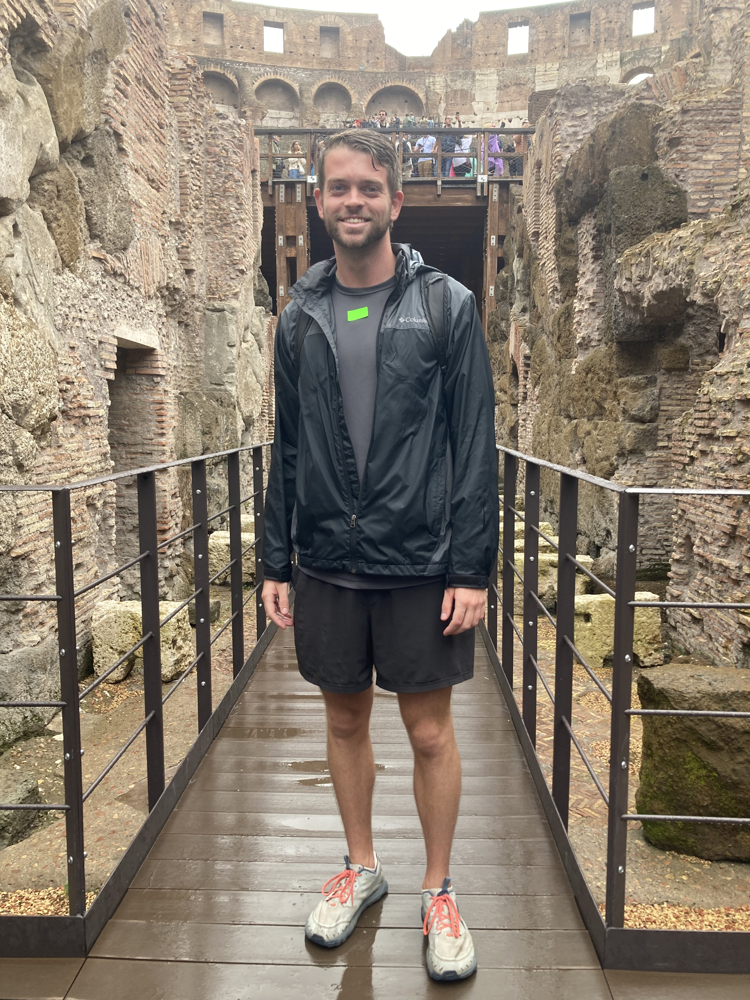

I just finished my MS in Computer Science, during which I honed my passion for researching and developed a new passion for written communication. I'm seeking roles where I can combine my love of science and nature with my skills in communication and artificial intelligence to educate.
Outside of writing and research, a good time involves good music, grilled food/BBQ, local brews, and the great outdoors. I love getting outside, especially to swim, but also to hike and run on trails, shoot bogey disc golf, camp on beaches and by rivers, float trip in rural Missouri, hammock in the mountains, and travel around the world (SE Asia & Europe so far). I've built most of my own furniture, helped renovate houses, cooked lots of tacos and curry, and occasionally brewed beer for final projects in university. Now I'm trying to learn how to grow salsa and speak Spanish.Cheers, Blake
Find me on Twitter, Substack, and Medium @BlakeRuprecht